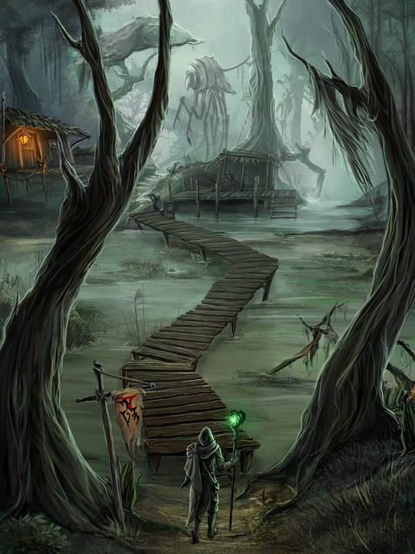

Wpływ fantasy na gry komputerowe
 Fantasy rozkwita w grach komputerowych gdzie dominuje i króluje w takich gatunkach jak cRPG (computer Role Playing Game) i MMORPG (Massively multiplayer online Role Playing Game). W owych grach światy i mitologie są często równie spójne i bogate treścią co w powieściach fantasy. Niektóre z nich można nawet krótko opisać jako interaktywne powieści fantasy. Najwybitniejsze światy powstałe na potrzeby tych gier są rozwijane i opisywane nie tylko w samych grach, ale też w postaci pełnoprawnych książek jak i powieści filozoficznych tworzonych przez fanów na forach.Przykładem takiego uniwersum może być Seria The Elder Scrolls, której świat urósł do niespotykanych rozmiarów. Jeden z byłych pracowników Bethesdy (firmy produkującej gry z tej serii) Michael Kirkbride, który odszedł ze studia podczas pracy nad III częścią serii - Morrowindem do dzisiaj czynnie uczestniczy w procesie tworzenia świata tej serii poprzez pisanie książek znajdujących się grach na zlecenie oraz tworzenie opowieści filozoficznych mówiących o zasadach obowiązujących we wszechświecie. Jego praca poza grami i studiem jest oficjalnie uznawana przez Bethesdę i nawet integrowana do środka gier. Takie rozdrobnienie źródeł historii świata doprowadziło do sprzeczności niektórych twierdzeń w grach. Jest to jednak pozytywne, bo każda książka w grach ma swojego autora ze świata gier (postacie niezależne, tak jak w prawdziwym świecie nie są wszechwiedzące), więc sprzeczność twierdzeń kilku autorów jest naturalna i wprowadza element zastanawiania się i zagadki (kto ma rację?) oraz umożliwia dyskusję z innymi na forum dotyczącą ich zdania co do prawdy. Możliwe jest także dzięki temu tworzenie teorii.